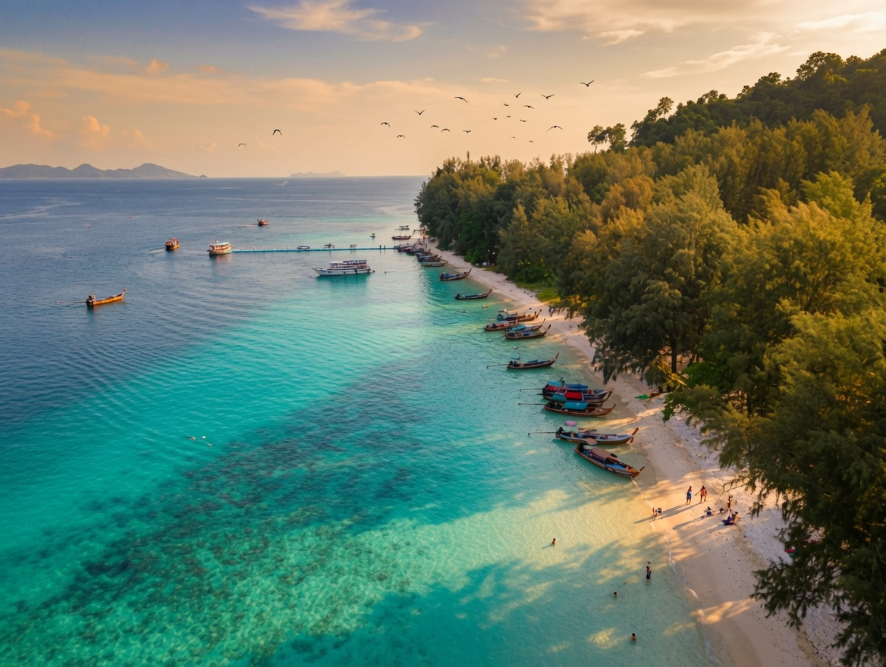

Koh Kradan
Koh Kradan is, for many people, simply the most beautiful beach in Thailand — in 2023 it was named the world's best beach by the World Beach Guide. The island is little more than a long, west-facing ribbon of powder-soft sand backed by thick jungle, with a shallow coral reef just offshore that you can snorkel straight from the sand. Development is minimal: a scatter of low-key resorts, no real roads, and days that revolve around swimming, drifting over the reef and watching the sun sink into the Andaman. It's also famous for the underwater wedding ceremony held here every Valentine's Day. The water is clearest from December to March, and by day's end the whole beach turns gold. Come for the snorkelling and the sunsets — and for how gloriously little there is to do.